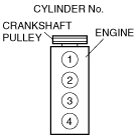

Technical Data ➭ ENGINE ➭ ENGINE TECHNICAL DATA
ENGINE TECHNICAL DATA [L8, LF]
id0150a5800100
|
Item |
Specification |
|---|---|
|
Valve clearance [Engine cold] |
IN: 0.22—0.28 mm {0.0087—0.0110 in} EX: 0.27—0.33 mm {0.0107—0.0129 in} |
|
Compression [L8] |
Standard: 1,750 kPa {17.845 kgf/cm2, 253.816 psi}[300 rpm] Minimum: 1,225 kPa {12.492 kgf/cm2, 177.64 psi}[300 rpm] Maximum difference between cylinders: 196.1 kPa {2.0 kgf/cm2, 28.5 psi} |
|
Compression [LF] |
Standard: 1,720 kPa {17.5391 kgf/cm2, 249.465 psi}[300 rpm] Minimum: 1,204 kPa {12.277 kgf/cm2, 174.58 psi}[300 rpm] Maximum difference between cylinders: 196.1 kPa {2.0 kgf/cm2, 28.5 psi} |
|
Front oil seal press-in amount |
0—1.0 mm {0—0.039 in} |
|
Cylinder Head Bolt Length L |
145.2—145.8 mm {5.72—5.74 in} |
|
Cylinder Head Bolt Maximum |
146.5 mm {5.77 in} |
|
Oil control valve resistance |
6.9—7.9 ohms [20°C {68°F}] |
|
Ignition timing |
Approx. BTDC 8 ° |
|
Idle speed |
No load: 670—770 rpm (MT), 700—800 rpm (AT) Electrical loads (38—48 A): 700—800 rpm Electrical loads (more than 48 A): 800—900 rpm P/S ON: 700—800 rpm (MT), 750—850 rpm (AT) A/C ON: 825—925 rpm (MT), 775—875 rpm (AT) |
|
Idle mixture |
HC concentration: Within the regulation CO concentration: Within the regulation |
|
Oil pressure (reference value) [oil temperature: 100 °C {212 °F}] |
L8: 234—521 kPa {2.39—5.31 kgf/cm2, 33.9—75.5 psi}[3,000 rpm] LF: 337—591 kPa {3.44—6.03 kgf/cm2, 49.0—85.8 psi}[3,000 rpm] |
|
Engine oil capacity (approx. quantity) *1 |
Oil replacement: 3.9 L {4.1 US qt, 3.4 Imp qt} Oil and oil filter replacement: 4.3 L {4.5 US qt, 3.8 Imp qt} Total (dry engine): 4.6 L {4.9 US qt, 4.0 Imp qt} |
|
Engine oil capacity (approx. quantity) (Without oil cooler) *2 |
Oil replacement: 4.05 L {4.28 US qt, 3.56 Imp qt} Oil and oil filter replacement: 4.45 L {4.70 US qt, 3.92 Imp qt} Total (dry engine): 4.75 L {5.02 US qt, 4.18 Imp qt} |
|
Engine oil capacity (approx. quantity) (With oil cooler) *2 |
Oil replacement: 4.05 L {4.28 US qt, 3.56 Imp qt} Oil and oil filter replacement: 4.55 L {4.81 US qt, 4.00 Imp qt} Total (dry engine): 4.85 L {5.12 US qt, 4.27 Imp qt} |
|
Engine coolant capacity (approx. quantity) |
7.5 L {7.9 US qt, 6.6 Imp qt} |
|
Cooling system cap valve opening pressure |
93.2—122.6 kPa {0.95—1.25 kgf/cm2, 13.5—17.8 psi} |
|
Thermostat initial-opening temperature |
80—84 °C {176—183 °F} |
|
Thermostat full-open temperature |
97 °C {207 °F} |
|
Thermostat full-open lift |
More than 8.0 mm {0.31 in} |
|
Cooling fan motor current |
High: 9.0—12.0 A Middle: 6.4—9.4 A Low: 4.8—7.8 A |
|
Fuel line pressure (Reference) |
350—410 kPa {3.57—4.18 kgf/cm2, 50.8—59.4 psi} |
|
Fuel hold pressure (Reference) |
250 kPa {2.55 kgf/cm2, 36.2 psi} or more |
|
Fuel injector resistance |
11.4—12.6 ohms [20 °C {68 °F}] |
|
Fuel injector leakage amount |
Less than 1 drop/2 min |
|
Fuel injection volume |
204—216 ml {204—216 cc, 12.5—13.1 cu in}/min |
|
Battery electrolyte specific gravity [20 °C {68 °F}] |
1.22—1.29 |
|
Battery load test current |
46B24L (36): 135 A |
|
Battery parasitic draw (When the ignition is off (key is removed), all doors and the bonnet are closed.) |
Vehicles with immobilizer system: 25—45 mA Vehicles without immobilizer system: 30 mA or less |
|
Battery slow charge current |
46B24L (36): 3.5—4.5 A |
|
Battery quick charge current [30 min.] |
46B24L (36): 25 A |
|
Generator standard voltage [IG-ON] |
Terminal B: B+ Terminal P: Approx. 1 V or less Terminal D: Approx. 0 V |
|
Generator standard voltage [Idle, 20 °C {68 °F}] |
Terminal B: 13—15 V Terminal P: Approx. 3—8 V Terminal D: Turn the electrical loads (headlights, blower motor, rear window defroster) on and verify that the voltage reading increases. |
|
Generator generated current minimum value |
70 % of the nominal output current (nominal output current: 100 A) [Ambient temp. 20 °C {68 °F}, voltage 13.0—15.0 V, both engine and generator are hot] |
|
Generator rotor resistance (between slip rings) [20 °C {68 °F}] |
2.0—2.3 ohm |
|
Generator brush length |
Standard: 22.5 mm {0.89 in} Minimum: 5.0 mm {0.20 in} |
|
Generator brush spring force |
Standard: 4.1—5.3 N {0.42—0.54 kgf, 0.92—1.19 lbf} Minimum: 1.7 N {0.17 kgf, 0.38 lbf} |
|
Firing order |
1-3-4-2 (all cylinders independent firing) |
|
 |
|
|
Spark plug type |
L8: L303 18 110 (ITR5F13) LF: L3G2 18 110, L3Y1 18 110 |
|
Spark plug gap |
1.25—1.35 mm {0.050—0.053 in} |
|
Spark plug resistance [25 °C {77 °F}] |
3.0—7.5 kilohms |
|
Starter no load test voltage |
11 V |
|
Starter no load test current |
90 A or less |
|
Starter pinion gap |
0.5—2.0 mm {0.02—0.07 in} |
|
Starter armature runout |
0.1 mm {0.004 in} max. |
|
Starter commutator diameter |
Standard: 29.4 mm {1.16 in} Minimum: 28.8 mm {1.13 in} |
|
Segment groove depth of starter commutator |
Standard: 0.5 mm {0.02 in} Minimum: 0.2 mm {0.008 in} |
|
Starter brush length |
Standard: 12.3 mm {0.48 in} Minimum: 5.5 mm {0.22 in} |
|
Starter brush spring force |
Standard: 15.0—20.4 N {1.53—2.08 kgf, 3.38—4.58 lbf} Minimum: 2.75 N {0.28 kgf, 0.62 lbf} |
*1: Applied VIN (Assumed)
European (L.H.D.) specs.
JMZ NC18F2*# 100001—128293
JMZ NC1882*# 100001—128293
JMZ NC18F6*# 100001—128293
U.K. specs.
JMZ NC18F20# 100001—128293
JMZ NC18820# 100001—128293
JMZ NC18F60# 100001—128293
Australian specs.
JM0 NC30F100 100001—102477
*2: Applied VIN (Assumed)
European (L.H.D.) specs.
JMZ NC18F2*# 128294—
JMZ NC1882*# 128294—
JMZ NC18F6*# 128294—
U.K. specs.
JMZ NC18F20# 128294—
JMZ NC18820# 128294—
JMZ NC18F60# 128294—
Australian specs.
JM0 NC30F100 102478—
Recommended engine oil
|
Item |
Specification |
|||||
|---|---|---|---|---|---|---|
|
Europe |
Except Europe |
|||||
|
Grade |
API SL, SM or ACEA A3/A5 |
API SL or ACEA A3/A5 |
API SL or ACEA A3 |
API SL, SM or ACEA A3 |
API SG/SH/SJ/SL/SM or ILSAC GF–2/GF–3/GF–4 |
|
|
Viscosity (SAE) |
5W–30 |
10W–40 |
5W–20 |
40, 30, 20, 20W–20, 10W–30, 10W–40, 10W–50, 20W–40, 15W–40, 20W–50, 15W–50, 5W–20, 5W–30 |
||
|
Remarks |
— |
Mazda genuine Dexelia oil e.g. |
— |
— |
||